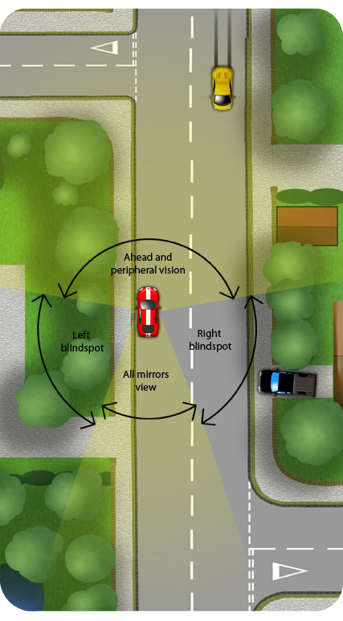

Use the POM routine to set off:
Prepare
- Press the clutch to the floor and select first gear
- Set a little gas
- Raise the clutch to the biting point
- Keep your feet still
(This is the typical sequence of controls for preparing a small, petrol car. A diesel car may not require setting the gas if you are moving away slowly. A car with an electronic handbrake will not require finding the biting point until the moment you intend to move away).
Observe
Sweep the car from the left blindspot through all mirrors and ahead, up the road, finishing with the right blindspot. Looking for:
- Approaching and passing traffic
- Other vehicles pulling away
- Pedestrians on, or about to step onto the road
- Vehicles in your blind spots pulling out of driveways or side roads
- Passing cyclists
Traffic on your road should not have to change speed or direction as you set off
Move
If it’s safe to move away then:
- Release the handbrake
- Consider a right signal if there is anybody who might benefit
- Ease the clutch up as you apply some gas
- Check the right mirror and blindspot again as you pull away
- Steer to the centre of your lane or a metre from the kerb or obstructions

To view the typical controls for setting off click Here
The un illuminated areas around the car in the picture above are called the blindspots. You wouldn’t be able to see into them without turning in your seat. Be sure to check these blindspots as part of the routine before setting off, especially to the right where you may notice vehicles emerging from side roads or driveways or pedestrians crossing the road beside you.
Don’t leave the signal on as you’re waiting to pull away. This can be disconcerting for passing traffic which shouldn’t have to slow down or steer on your account. Apply the signal just before pulling away.
If there is a lot of passing traffic, anticipate your opportunity and prepare/observe in time to manoeuvre away just as the last car has passed.
You can pull away where there is oncoming traffic but use a signal and beware of cars overtaking or moving out to pass obstructions.
Stalling
Stalling is where the engine cuts out as you lift the clutch to engage it. It is normal for learners to experience some stalling in their early practice. Common causes are:
- Clutch up through biting point too quickly
- Clutch up slowly through biting point but released too early.
- Clutch up through biting point before brake is released
- Clutch up without setting enough gas (Particularly petrol)
- Not in first gear